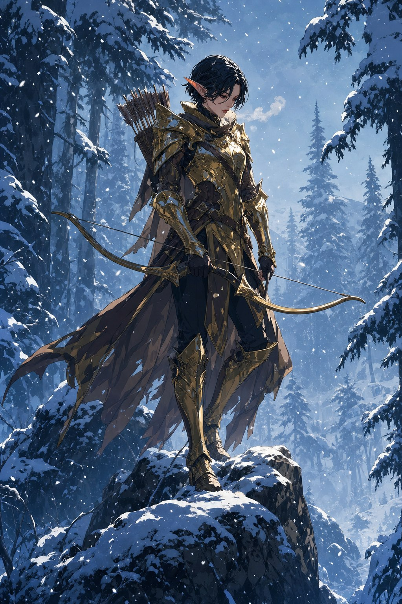
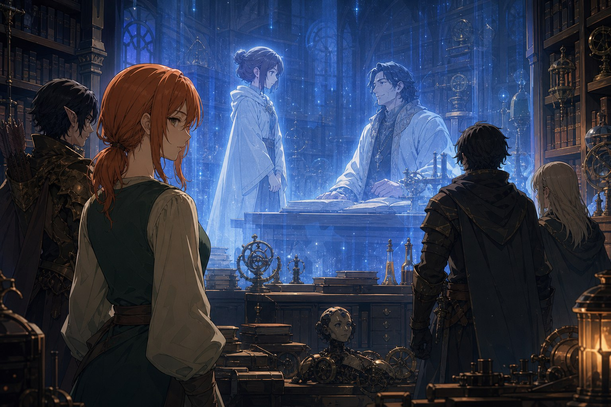
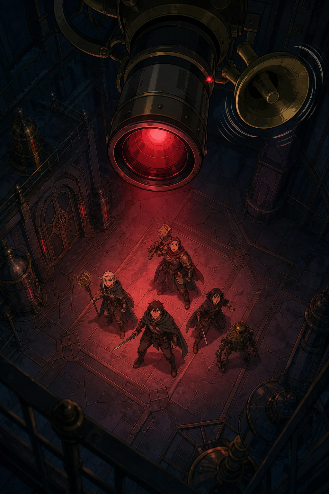

한참을 울고 나서 힘이 다 빠진 세틀러가 대자로 누운 채 말했다. “너희들, 고마워. 특히 거기 오렌지색 머리 아가씨.” 그는 세라의 연구소가 뭔지도 모르고 시간 돌파 장치를 노렸을 뿐이지만, 자신과 실반이 목숨을 걸고 구한 그 물건으로 무엇을 할 수 있는지 궁금해졌다며 동행을 청했다. “좋아! 함께 가지! 아, 그런데 힘이 다 빠져서 못 일어나겠는데.” 창고에는 여러 장비가 있었고, 그중 숏보우를 집어 든 에일라가 조용히 화살을 쏘자 정중앙에 꽂혔다. 세틀러가 휘파람을 불며 진작 말하지 그랬느냐고 하자, 에일라는 담담히 답했다. “저도 몰랐습니다.”
밀밭의 저격
남쪽으로 말을 몰자 황금빛 밀밭이 눈앞을 가득 채웠다. 뒤늦게 추수가 끝난 듯 베어진 밀단이 흩어져 있었다. 숲을 앞두고 잠시 쉬어갈까 하던 참, 밀밭 한가운데서 기계 심장의 붉은 빛이 번뜩이더니 금속 탄환이 에일라를 향해 날아왔다. 저격이었다. 농지를 관리하던 자동기계들이 폭주해 에일라를 알아보고 덤벼든 것이다. 이번 기계들은 말을 했고, 제법 감정적이었다. 한층 강해진 세 사람은 이제 이들과 호각으로 맞설 수 있었지만, 사거리가 넓고 물리 피해도 절반씩 들어오는 저격에 에일라가 크게 다쳤고, 결국 더 싸우지 않고 남쪽 숲으로 몸을 피했다.
눈 내리는 숲의 반복
숲 안쪽은 나무들이 서로 그늘을 드리워 여전히 눈이 쌓여 있었다. 처음엔 늑대 하나쯤의 쉬운 전투였는데, 같은 전투가 자꾸만 반복되기 시작했다. 공간뿐 아니라 시간까지 루프되는 것인가 싶었지만, 기억은 멀쩡했다. 아마 우리는 루프되지 않고 적들만 루프되는 것이리라. 판델라와 녹티스가 모두 죽을 뻔한 위기를 겨우 넘긴 그때, 어디선가 날아온 화살이 늑대의 목덜미에 꽂혔다.
눈 내리는 숲을 배경으로, 짧은 흑발의 엘프가 유려한 곡선의 황금색 갑옷을 두른 채 바위 위에 서 있었다. 등 뒤의 화살통과 굳게 쥔 활에서 숙련된 사수의 기운이 풍겼다. 그녀는 속삭이는 듯한 중성적인 목소리로, 돌아가는 것이 좋겠다고 권했다. 이 숲을 지나더라도 연구소에는 갈 수 없다고. 자신도 연구소에 볼 일이 있어 들어왔지만 들어가는 좌표를 찾지 못했다고. “저는 타임필드라고 합니다.” 그녀가 에일라를 알아본 듯한 기색은 그때 아무도 눈치채지 못했다.
좌표가 맞는 순간
에일라가 세 사람을 믿느냐는 타임필드의 물음에, 에일라는 자신이 누군가에게 믿음을 느끼지는 못한다고 답했다. 다만 지금까지 이들이 보여온 행동으로 미루어 자신에게 해를 끼칠 것 같지 않다고. “그것이 신뢰일지도 모르겠습니다. 인간의 행동이란 아무리 많은 증거가 있어도 예상할 수 없는 것이니까요.” 타임필드는 “에일라 식의 믿음이군요” 하고 조금 웃었다. 그녀가 시간 돌파 장치를 손 위에 올리자 장치가 빛을 내며 떠올랐고, 아무것도 없던 자리의 공간이 왜곡되며 투명한 건물이 점점 불투명해졌다. 아무것도 없던 곳에 연구소가 마치 주파수가 맞는 것처럼 나타났다. 타임필드가 친절하게 미소지으며 문을 열었다. “어서와, 에일라.”

시공간의 메아리
세라의 연구소 안에는 시공간의 메아리 같은 잔상들이 남아 있었다. 특정한 자리에 서면 반투명한 과거가 겹쳐 보였다. 흰 로브를 입은 젊은 세라가 책상 뒤에 앉은 아르카딘 앞에 공손히 서 있고, 부드럽게 웃는 남자가 “여긴 자네의 연구소인데” 하고 말하는 장면. 타임필드는 옛날 이야기의 문장을 읽듯 담담하게 그들의 내력을 들려주었다. 이 연구소는 세라의 독립을 지원하려는 아르카딘의 호의로 지어졌지만, 세라는 독립을 원하지 않았다고. 아르카딘과 가까이 있고 싶어 했기 때문이라고. 세라는 원래 도시의 어둠 속에 살던 마녀였는데, 큰 건수를 위해 유명한 마법사 아르카딘에게 접근했다가 그를 두려워하고, 동경하고, 끝내 사랑하게 되었다고 했다.
동쪽 복도에서는 휠체어에 탄 어린 에일라와, 그 휠체어를 성가시다는 듯 밀며 무언가를 길게 설명하는 아르카딘의 잔상이 지나갔다. 타임필드는 입술을 깨물었다. 구제국력 715년, 아르카딘은 ‘감정이 사라지는 병’에 걸린 피험체를 샀다고. 감정이라는 불순물이 사라진 순수한 마음을 연구하고 싶어 했다고. 일 년 뒤 실험 중 사고로 에일라는 두 다리의 기능을 잃었다. 에일라는 점점 감정을 잃어갔지만, 계산과 기억으로 오랫동안 상냥함을 유지한 총명한 아이였기에 한동안 아무도 눈치채지 못했다. 하지만 그때쯤 에일라는 노래를 부르지 못하게 되었다. 그리고 아르카딘이 기자나 마을 사람 앞에서는 늘 친절하게 웃으면서도, 오직 에일라 앞에서만 평범한 마을 청년처럼 ‘하하’ 하고 웃는 모습을 보았을 때, 세라의 마음은 부서지고 말았다. 세라는 에일라를 지독하게 질투하고, 지독하게 미워하게 되었다. 아르카딘이 이 연구소를 지어 세라를 독립시키려 했던 것도, 어쩌면 그걸 눈치챘기 때문이었으리라고 타임필드는 말했다. 세틀러가 눈을 크게 뜨며 “당신 혹시, 아르카딘인가?” 하고 묻자, 타임필드는 멸시하는 표정으로 바라볼 뿐 대답하지 않았다.
냉동실
남쪽 방 앞에서 타임필드가 걸음을 멈췄다. “여기는 냉동실입니다. 잠깐 기다려보시겠습니까.” 이내 커다란 상자를 든 젊은 세라가 굳은 표정으로 문을 열고 들어오는 잔상이 나타났다. 그녀의 옷과 얼굴은 토사물과 눈물, 피로 엉망이 되어 있었다. 상자를 내려놓자 세틀러가 눈을 질끈 감고 고개를 돌렸다. 상자 안에는 어린 에일라의 조각들이 들어 있었다. 어느 날 아르카딘이 이 아이의 폐기를 지시했지만, 세라는 도저히 그냥 보낼 수 없었다는 것이다. 세라는 몇 번이나 토하고 분노하고 울고 소리지르며 그 조각들을 필사적으로 맞췄다. 이 아이가 세상에서 이런 식으로 사라져서는 안 된다는 생각 하나로.
세라는 반쯤 미친 상태로 ‘시간 냉동’을 통해 이 시신을 언제가 될지 모를 먼 미래로 전송했다. 원래 그녀가 쓸 수 있던 시간 냉동은 구슬만 한 물체를 한 시간 정지시키는 것이 고작이었고, 그마저 하루 한 번뿐이었다. 그러나 세라는 마녀들에게서 배운 흑마법의 술식을 떠올려, 자신의 능력을 크게 벗어나는 일을 해냈다. 그 대가로 마법 회로가 전부 타버렸고, 다시는 마법을 쓰지 못하게 되었다. “그 날 세라는 죽었습니다. 타임필드만이 남았습니다. 저는 그날 아르카딘을 떠났습니다.” 필사적으로 조각을 맞추는 잔상을 더는 보고 있기 힘들다며, 타임필드가 먼저 자리를 뜨려 하자 에일라가 그녀를 불렀다. “세라.” 그러고는 억양도 표정도 없이 말했다. “고맙습니다.” 타임필드는 한참 만에 대답했다. “네.”

띵동
수천 년 후로 보냈다는 시신이 어째서 백스물일곱 해밖에 지나지 않은 지금 살아 있는지, 세라 자신도 알지 못했다. 세틀러가 그 모순을 캐묻던 그때, 방마다 천장에 달린 소리장치에서 사이렌이 울렸다. 누군가 타임브레이커를 꺼내려 하고 있었다. 이 안에 있는 채로 장치가 부서지거나 제거되면 연구소째로 시공간의 미아가 되어 영원히 갇힌다며, 타임필드가 출입구로 달렸다. 문은 열리지 않았다. 그때 천장의 소리장치에서 경쾌한 목소리가 흘러나왔다. “띵동. 드디어 찾았네요 여러분?” 너무나 즐거워하는, 에일라와 똑같은 목소리였다. 망원경 렌즈 같은 장치가 그들을 똑바로 바라보았다. “반가워요, 여러분!” 갇힌 자들과, 그들을 지켜보는 또 하나의 에일라. 잠긴 연구소 안에서 그 밤이 그렇게 저물었다.